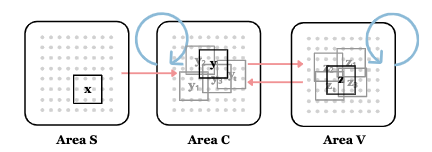
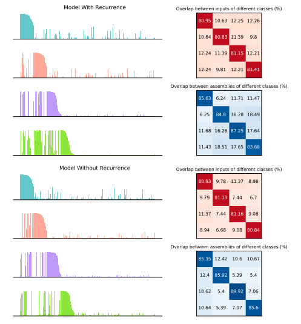
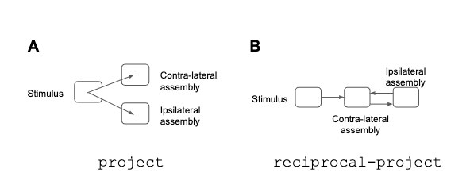

Eva Yi Xie
About Me
I am a third year undergraduate student at MIT, with double majors in Computer Science (6-4) and Mathematics (18). I research and develop the theoretical framework of how the brain produces intelligent behavior and how we may be able to replicate intelligence in machines in Poggio Lab as a UROP at MIT CBMM. I also research in the Madry Lab at MIT CSAIL as a SuperUROP, where I develop the understanding and tools that enable real-world deployment of machine learning models in a robust, reliable and responsible way. I am applying to PhD programs this fall. Happy to chat!
Research Interests
Include but not limited to:
- Computational Neuroscience: learning, memory, cognition, neural computation, biologically plausible learning model/system.
- Machine Learning: associative memory model, graph-based deep learning, AI Alignment and safe deployment for computer vision & NLP. Exploring AI regulation + policy making.
- NeuroAI: A combo of both displines, where the brain inspires better learning algorithm, and AI aids understanding of the brain.
I believe good research needs both the depth and breath of knowledge and understanding. This enables meaningful associations, and thus leads to breakthroughs. So, I am always open to new things :) Before CompNeuro and ML, I did research in Bionics, Nuclear Science, and Genomics.
Recent News
- [May 2023] Our recent work on Assembly Calculus has made an acceptance to the CCNeuro*2023, taking place in Oxford, UK on August 24-27, 2023.
- [April 2023] Our recent work on Assembly Calculus has made an early acceptance to the 32nd Annual CNS*2023, taking place in Leipzig, Germany on July 15-19, 2023.
- [Nov. 2022] I presented two projects on Neural Assembly at MIT Advances in the quest to understand intelligence.
- [May 2022] I was named a winner for 2022 MIT Mathematics Departmental Teaching and Learning Award for skill and dedication to undergraduate teaching through my work as an Undergraduate Assistant for 18.600 Probability and Random Variables.
Manuscripts & Work in Progress
(* indicates equal contributions)
-
 CNS & CCN32nd Annual Computational Neuroscience Meeting , 2023. Conference on Cognitive Computational Neuroscience , 2023.(Stay tune for the release of our memo soon!) CBMMCenter for Brains, Minds and Machines(CBMM) Memo 137 , 2022. ICoN(Our preliminary results recently won ICoN grant. Stay tuned!)
Research Experience
[Fall 2022 - Current] Madry Lab at MIT CSAIL (Advisor: Aleksander Madry & Logan Engstrom)
- Develop effective and computationally tractable data selection method at large scale for Language Models.
- Demystify causal relationship of concept-based interpretability in Network Dissection for constructing aligned models.
[Winter 2022 - Current] Poggio Lab at MIT CBMM (Advisor: Tomaso Poggio & Akshay Rangamani)
- Investigate empirically and theoretically that compositional sparsity is the key principle underlying machine learning.
- Build foundations for a biologically plausible learning system, Assembly Calculus.
[IAP 2021 - IAP 2022] Biomechatronics Group at MIT Media Lab (Advisor: Hugh Herr & Guillermo Herrera Arcos)
- Designed and fabricated electronic and software tools for optically-modulated prosthetic for amputees & stroke patients.
[Fall 2020 - IAP 2021] MIT Computational Reactor Physics Group (Advisor: Benoit Forget )
- Created open-source fast nuclear reactor geometry template for OpenMC global community.
[Summer - Winter 2019] Andolfatto Lab at Columbia University (Advisor: Peter Andolfatto & Ana Pinharanda)
- Identified 4 SNPs with potentials to improve Cardiovascular Disease treatments by conducting GWAS using R.
Industry Experience
[Summer 2023] IBM Research, Research Intern
- Develop gTDR: an advanced graph-based machine learning toolkit for temporal, dynamic, and relational data.
[Winter 2023] Microsoft, Research Intern
- Worked end-to-end on a computer vision based product for waste categorization with precision and low latency via Microsoft AI Development Acceleration Program (MAIDAP).
- Developed relevant training pipelines from the ground up and enabled model deployment with interpretability tools (via collaboration w/ Azure Machine Learning team and MSR); deployed deliverables with half of the expected time.
- The project was highlighted in Microsoft’s T&R newsletter.
[Summer 2022] Meta, Full Stack Software Engineer Intern
- Developed in-production features under a data-driven approach using Objective-C, PHP, Javascript, GraphQL, A/B testings to close top-line 20% connection gaps originated in new monetization initiatives among 60 million businesses.
- Pioneered and led cross-org mobile dev framework migration as the first engineer across the entire Facebook App org.
- Authored internal guidelines and wiki to teach senior engineers how to tackle dev migration; saved 50% research time.
[Winter 2022, 2021] Jane Street, INSIGHT Program Invitee for Trading (2022), SWE (2021)
- Learned about OCaml, mathematical and financial topics, coached by Jane Street SWEs/traders.
[Summer 2021] Facebook, FBU Enginnering Intern
- Designed, wire-framed, developed, tested, & demoed an original IOS mobile app Foodie.
Teaching
[January 2023] Teaching Assistant for 6.S191 Introduction to Deep Learning
[Spring 2022] Undergraduate Assistant for 18.06 Linear Algebra
- Was invited by the department to assist with teaching MIT’s largest foundation class in Linear Algebra with Professor Steven Johnson.
[Fall 2022] Undergraduate Assistant for 18.600 Probability and Random Variables
- Winner of 2022 MIT Department of Mathematics Teaching and Learning Award.
- Received teaching evaluations (on a 1–7 scale) of 7.0 (overall rating), which consists of 6.7 (stimulated interest), 7.0 (displayed thorough knowledge), and 7.0 (supported learning).
Selective Awards
- [May 2022] MIT Mathematics Departmental Teaching and Learning Award
- [May 2022] D. E. Shaw & Co. Discovery Fellowship Recipient
- [Sep. 2020] 2020 Bloomberg x NCWIT Grace Hopper Conference Scholar
- [Mar. 2020] Minor Planet #17245 YiXie, issued by LINEAR Program of MIT Lincoln Laboratory in recognization of achievement as a finalist in the 2020 Regeneron Science Talent Search.
- [Feb. 2020] Aspirations in Computing Winner of Greater NYC Affiliate 2020, supported by National Center for Women & Information Technology (NCWIT), Bank of America; Microsoft and Motorola Solutions Foundation, and Facebook.
- [Jan. 2020] One of 40 finalists in 2020 Regeneron Science Talent Search, the nation’s oldest and most prestigious science and math competition for high school seniors.
Services
Academic Services
- [2023] Reviewer for Conference on Cognitive Computational Neuroscience.
Advisory Board
- [2022-Current] MIT School of Engineering, Advisor in Undergraduate Student Advisory Group for Engineering (SAGE) . Provide Deans with perspectives on education, engagement, & research.
-
[2022-Current] MIT EECS, Advisor in MIT Undergraduate Student Advisory Group in EECS (USAGE). Meet weekly with department leadership to advise on all academic matters, as well as representing MIT EECS in all major events and to stakeholders.
Student Leadership
- [2022-2023] MIT TechX, Director. Oversee MIT’s largest tech-related student org of over 100 organizers.
- [2021-2022] MIT TechX, Marketing Director. Oversee the publicity and community outreach of TechX.
- [2020-2021] MIT HackMIT, Social Chair, Marketing & DevOps organizer. Collaborated and developed HackPlayground to enable the first and largest online hackathon of 1500+ global hackers during COVID-19
- [2020-Current] MIT IEEE/ACM, Publicity Chair. Connect students, faculty, and industry through 50+ events.
- [2022-Current] MIT EECS, Associate Advisor. Help advising undergraduate students with Prof. Nancy Lynch.
Community 501(c)3 Nonprofit
- [2018-Current] TeenHacks LI, Former Director & Now Senior Advisor. Grew a local event to the largest 24-hour high school hackathon in Northeast, completely run by a team of 40 students (15 organizers in 2018), cumulatively hosted over 700 students for free. Awarded as the Long Island Innovator of the Year and recognized by mainstream media such as Fox Business, Newsdays, Wall Street Journal, as well as governors like Congressman Suozzi, and Nassau County Executive.
- [2018-2020] United East Athletics Association, Admin & Planner. Organize the summer education program with 32 enrichment classes including STEM classes, English literature, etc., with over 550 participants, including students from 5-14 years old and volunteers from various age groups. See our program yearbook with my designed cover.
Misc
Showcasing some art works I am proud of. In my free time, I design and draw my original characters and science. I also make some random crafts.


Powered by Jekyll and Minimal Light theme.